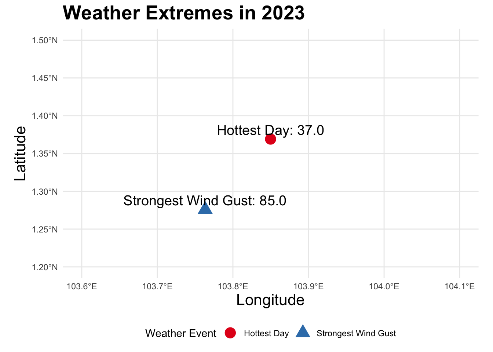

weather_data <- read_excel("full_year_weather_data.xlsx")Weather Extremes in Singapore 2023
Introduction
This report analyzes the weather extremes in Singapore for the year 2023, highlighting significant weather conditions across different regions. The objective is to critique, reconstruct, and improve the original visualization to effectively communicate the data.
Data Preparation
Load and inspect the data
Extract unique locations from the dataset
unique_locations <- unique(weather_data$Location)Print unique locations to dynamically find coordinates
# print(unique_locations)Manually add coordinates for each unique location
location_coords <- tibble(
Location = c("Admiralty", "Ang Mo Kio", "Botanic Garden", "Bukit Panjang", "Bukit Timah", "Buona Vista",
"Changi", "Choa Chu Kang (Central)", "Choa Chu Kang (South)", "Clementi", "Dhoby Ghaut",
"East Coast Parkway", "Jurong (West)", "Jurong Island", "Jurong Pier", "Kent Ridge",
"Kranji Reservoir", "Lim Chu Kang", "Lower Peirce Reservoir", "Macritchie Reservoir",
"Mandai", "Marina Barrage", "Marine Parade", "Newton", "Nicoll Highway", "Pasir Panjang",
"Pasir Ris (Central)", "Pasir Ris (West)", "Paya Lebar", "Pulau Ubin", "Punggol",
"Queenstown", "Seletar", "Semakau Island", "Sembawang", "Sentosa Island", "Serangoon",
"Simei", "Somerset (Road)", "Tai Seng", "Tanjong Katong", "Tengah", "Toa Payoh",
"Tuas", "Tuas South", "Ulu Pandan", "Upper Peirce Reservoir", "Whampoa"),
longitude = c(103.8000, 103.8498, 103.8185, 103.7749, 103.7972, 103.7891, 103.9880, 103.7468, 103.7488, 103.7654,
103.8455, 103.9568, 103.6868, 103.7285, 103.7158, 103.7765, 103.7495, 103.7073, 103.8148, 103.8217,
103.7685, 103.8700, 103.9060, 103.8390, 103.8572, 103.7633, 103.9502, 103.9645, 103.8871, 103.9614,
103.9155, 103.8003, 103.8822, 103.8136, 103.8281, 103.8159, 103.8721, 103.9490, 103.8312, 103.8760,
103.7410, 103.8478, 103.8492, 103.6401, 103.7465, 103.8182, 103.8703, 103.8500),
latitude = c(1.4400, 1.3691, 1.3145, 1.3840, 1.3350, 1.3080, 1.3516, 1.3846, 1.3816, 1.3254,
1.2994, 1.2906, 1.3408, 1.2914, 1.3108, 1.2954, 1.4392, 1.4198, 1.3614, 1.3402,
1.4020, 1.2806, 1.3000, 1.3138, 1.2904, 1.2760, 1.3861, 1.3987, 1.3205, 1.4163,
1.3972, 1.2735, 1.4131, 1.4570, 1.4692, 1.2422, 1.3528, 1.3430, 1.2822, 1.3350,
1.3422, 1.3510, 1.3278, 1.2803, 1.2567, 1.3483, 1.3536, 1.3100)
)Ensure the number of rows in location_coords matches the number of unique locations
if(nrow(location_coords) != length(unique_locations)) {
stop("The number of provided coordinates does not match the number of unique locations.")
}Merge the weather data with the coordinates
weather_data <- weather_data %>%
left_join(location_coords, by = "Location")Find extreme values
extreme_events <- weather_data %>%
summarize(
Hottest_Day = max(`Maximum Temperature (°C)`, na.rm = TRUE),
Coolest_Day = min(`Minimum Temperature (°C)`, na.rm = TRUE),
Wettest_Day = max(`Daily Rainfall Total (mm)`, na.rm = TRUE),
Strongest_Wind_Gust = max(`Max Wind Speed (km/h)`, na.rm = TRUE)
)Find locations and dates of these extreme events
extreme_locations <- weather_data %>%
filter(
`Maximum Temperature (°C)` == extreme_events$Hottest_Day |
`Minimum Temperature (°C)` == extreme_events$Coolest_Day |
`Daily Rainfall Total (mm)` == extreme_events$Wettest_Day |
`Max Wind Speed (km/h)` == extreme_events$Strongest_Wind_Gust
) %>%
mutate(
Event = case_when(
`Maximum Temperature (°C)` == extreme_events$Hottest_Day ~ "Hottest Day",
`Minimum Temperature (°C)` == extreme_events$Coolest_Day ~ "Coolest Day",
`Daily Rainfall Total (mm)` == extreme_events$Wettest_Day ~ "Wettest Day",
`Max Wind Speed (km/h)` == extreme_events$Strongest_Wind_Gust ~ "Strongest Wind Gust"
),
Value = case_when(
`Maximum Temperature (°C)` == extreme_events$Hottest_Day ~ as.character(`Maximum Temperature (°C)`),
`Minimum Temperature (°C)` == extreme_events$Coolest_Day ~ as.character(`Minimum Temperature (°C)`),
`Daily Rainfall Total (mm)` == extreme_events$Wettest_Day ~ as.character(`Daily Rainfall Total (mm)`),
`Max Wind Speed (km/h)` == extreme_events$Strongest_Wind_Gust ~ as.character(`Max Wind Speed (km/h)`)
)
)Remove entries where Value is NA or dash
extreme_locations <- extreme_locations %>%
filter(!is.na(Value) & Value != "-")Load Singapore shapefile for better visualization
singapore_map <- st_read(system.file("shape/nc.shp", package = "sf"), quiet = TRUE)# Define the base map
base_map <- ggplot() +
geom_sf(data = singapore_map, fill = "gray80", color = "gray85") +
theme_minimal() +
coord_sf(xlim = c(103.6, 104.1), ylim = c(1.2, 1.5))# Plot weather events
weather_plot <- base_map +
geom_point(
data = extreme_locations,
aes(
x = longitude,
y = latitude,
color = factor(Event),
shape = factor(Event)
),
size = 5
) +
geom_text_repel(
data = extreme_locations,
aes(
x = longitude,
y = latitude,
label = paste(Event, Value, sep = ": ")
),
size = 5, # Increase label size
nudge_y = 0.01 # Adjust position of labels
) +
scale_color_brewer(palette = "Set1") +
labs(
title = "Weather Extremes in 2023",
x = "Longitude",
y = "Latitude",
color = "Weather Event",
shape = "Weather Event"
) +
theme(
legend.position = "bottom",
plot.title = element_text(size = 20, face = "bold"), # Increase title size
axis.title = element_text(size = 16) # Increase axis title size
)Print the plot
print(weather_plot)
Style the R code according to the tidyverse style guide
style_text("weather_prep2.qmd")Warning: Could not use `colored = TRUE`, as the package prettycode is not installed.
Please install it if you want to see colored output or see
`?styler::print.vertical()` for more information.weather_prep2.qmdLint the R code to ensure compliance with the tidyverse style guide
lint("weather_prep2.qmd")/Users/halimsmacbookairm1/Documents/GitHub/csc3107-iv-team-violetred-p3-poster-project/weather_prep2.qmd:40:3: style: [commented_code_linter] Commented code should be removed.
# print(unique_locations)
^~~~~~~~~~~~~~~~~~~~~~~
/Users/halimsmacbookairm1/Documents/GitHub/csc3107-iv-team-violetred-p3-poster-project/weather_prep2.qmd:46:81: style: [line_length_linter] Lines should not be more than 80 characters. This line is 107 characters.
Location = c("Admiralty", "Ang Mo Kio", "Botanic Garden", "Bukit Panjang", "Bukit Timah", "Buona Vista",
~~~~~~~~~~~~~~~~~~~~~~~~~~~~~~~~~~~~~~~~~~~~~~~~~~~~~~~~~~~~~~~~~~~~~~~~~~~~~~~~^~~~~~~~~~~~~~~~~~~~~~~~~~~
/Users/halimsmacbookairm1/Documents/GitHub/csc3107-iv-team-violetred-p3-poster-project/weather_prep2.qmd:46:107: style: [trailing_whitespace_linter] Trailing whitespace is superfluous.
Location = c("Admiralty", "Ang Mo Kio", "Botanic Garden", "Bukit Panjang", "Bukit Timah", "Buona Vista",
^
/Users/halimsmacbookairm1/Documents/GitHub/csc3107-iv-team-violetred-p3-poster-project/weather_prep2.qmd:47:81: style: [line_length_linter] Lines should not be more than 80 characters. This line is 104 characters.
"Changi", "Choa Chu Kang (Central)", "Choa Chu Kang (South)", "Clementi", "Dhoby Ghaut",
~~~~~~~~~~~~~~~~~~~~~~~~~~~~~~~~~~~~~~~~~~~~~~~~~~~~~~~~~~~~~~~~~~~~~~~~~~~~~~~~^~~~~~~~~~~~~~~~~~~~~~~~
/Users/halimsmacbookairm1/Documents/GitHub/csc3107-iv-team-violetred-p3-poster-project/weather_prep2.qmd:47:104: style: [trailing_whitespace_linter] Trailing whitespace is superfluous.
"Changi", "Choa Chu Kang (Central)", "Choa Chu Kang (South)", "Clementi", "Dhoby Ghaut",
^
/Users/halimsmacbookairm1/Documents/GitHub/csc3107-iv-team-violetred-p3-poster-project/weather_prep2.qmd:48:81: style: [line_length_linter] Lines should not be more than 80 characters. This line is 100 characters.
"East Coast Parkway", "Jurong (West)", "Jurong Island", "Jurong Pier", "Kent Ridge",
~~~~~~~~~~~~~~~~~~~~~~~~~~~~~~~~~~~~~~~~~~~~~~~~~~~~~~~~~~~~~~~~~~~~~~~~~~~~~~~~^~~~~~~~~~~~~~~~~~~~
/Users/halimsmacbookairm1/Documents/GitHub/csc3107-iv-team-violetred-p3-poster-project/weather_prep2.qmd:48:100: style: [trailing_whitespace_linter] Trailing whitespace is superfluous.
"East Coast Parkway", "Jurong (West)", "Jurong Island", "Jurong Pier", "Kent Ridge",
^
/Users/halimsmacbookairm1/Documents/GitHub/csc3107-iv-team-violetred-p3-poster-project/weather_prep2.qmd:49:81: style: [line_length_linter] Lines should not be more than 80 characters. This line is 101 characters.
"Kranji Reservoir", "Lim Chu Kang", "Lower Peirce Reservoir", "Macritchie Reservoir",
~~~~~~~~~~~~~~~~~~~~~~~~~~~~~~~~~~~~~~~~~~~~~~~~~~~~~~~~~~~~~~~~~~~~~~~~~~~~~~~~^~~~~~~~~~~~~~~~~~~~~
/Users/halimsmacbookairm1/Documents/GitHub/csc3107-iv-team-violetred-p3-poster-project/weather_prep2.qmd:49:101: style: [trailing_whitespace_linter] Trailing whitespace is superfluous.
"Kranji Reservoir", "Lim Chu Kang", "Lower Peirce Reservoir", "Macritchie Reservoir",
^
/Users/halimsmacbookairm1/Documents/GitHub/csc3107-iv-team-violetred-p3-poster-project/weather_prep2.qmd:50:81: style: [line_length_linter] Lines should not be more than 80 characters. This line is 105 characters.
"Mandai", "Marina Barrage", "Marine Parade", "Newton", "Nicoll Highway", "Pasir Panjang",
~~~~~~~~~~~~~~~~~~~~~~~~~~~~~~~~~~~~~~~~~~~~~~~~~~~~~~~~~~~~~~~~~~~~~~~~~~~~~~~~^~~~~~~~~~~~~~~~~~~~~~~~~
/Users/halimsmacbookairm1/Documents/GitHub/csc3107-iv-team-violetred-p3-poster-project/weather_prep2.qmd:50:105: style: [trailing_whitespace_linter] Trailing whitespace is superfluous.
"Mandai", "Marina Barrage", "Marine Parade", "Newton", "Nicoll Highway", "Pasir Panjang",
^
/Users/halimsmacbookairm1/Documents/GitHub/csc3107-iv-team-violetred-p3-poster-project/weather_prep2.qmd:51:81: style: [line_length_linter] Lines should not be more than 80 characters. This line is 97 characters.
"Pasir Ris (Central)", "Pasir Ris (West)", "Paya Lebar", "Pulau Ubin", "Punggol",
~~~~~~~~~~~~~~~~~~~~~~~~~~~~~~~~~~~~~~~~~~~~~~~~~~~~~~~~~~~~~~~~~~~~~~~~~~~~~~~~^~~~~~~~~~~~~~~~~
/Users/halimsmacbookairm1/Documents/GitHub/csc3107-iv-team-violetred-p3-poster-project/weather_prep2.qmd:51:97: style: [trailing_whitespace_linter] Trailing whitespace is superfluous.
"Pasir Ris (Central)", "Pasir Ris (West)", "Paya Lebar", "Pulau Ubin", "Punggol",
^
/Users/halimsmacbookairm1/Documents/GitHub/csc3107-iv-team-violetred-p3-poster-project/weather_prep2.qmd:52:81: style: [line_length_linter] Lines should not be more than 80 characters. This line is 102 characters.
"Queenstown", "Seletar", "Semakau Island", "Sembawang", "Sentosa Island", "Serangoon",
~~~~~~~~~~~~~~~~~~~~~~~~~~~~~~~~~~~~~~~~~~~~~~~~~~~~~~~~~~~~~~~~~~~~~~~~~~~~~~~~^~~~~~~~~~~~~~~~~~~~~~
/Users/halimsmacbookairm1/Documents/GitHub/csc3107-iv-team-violetred-p3-poster-project/weather_prep2.qmd:52:102: style: [trailing_whitespace_linter] Trailing whitespace is superfluous.
"Queenstown", "Seletar", "Semakau Island", "Sembawang", "Sentosa Island", "Serangoon",
^
/Users/halimsmacbookairm1/Documents/GitHub/csc3107-iv-team-violetred-p3-poster-project/weather_prep2.qmd:53:81: style: [line_length_linter] Lines should not be more than 80 characters. This line is 96 characters.
"Simei", "Somerset (Road)", "Tai Seng", "Tanjong Katong", "Tengah", "Toa Payoh",
~~~~~~~~~~~~~~~~~~~~~~~~~~~~~~~~~~~~~~~~~~~~~~~~~~~~~~~~~~~~~~~~~~~~~~~~~~~~~~~~^~~~~~~~~~~~~~~~
/Users/halimsmacbookairm1/Documents/GitHub/csc3107-iv-team-violetred-p3-poster-project/weather_prep2.qmd:53:96: style: [trailing_whitespace_linter] Trailing whitespace is superfluous.
"Simei", "Somerset (Road)", "Tai Seng", "Tanjong Katong", "Tengah", "Toa Payoh",
^
/Users/halimsmacbookairm1/Documents/GitHub/csc3107-iv-team-violetred-p3-poster-project/weather_prep2.qmd:54:81: style: [line_length_linter] Lines should not be more than 80 characters. This line is 88 characters.
"Tuas", "Tuas South", "Ulu Pandan", "Upper Peirce Reservoir", "Whampoa"),
~~~~~~~~~~~~~~~~~~~~~~~~~~~~~~~~~~~~~~~~~~~~~~~~~~~~~~~~~~~~~~~~~~~~~~~~~~~~~~~~^~~~~~~~
/Users/halimsmacbookairm1/Documents/GitHub/csc3107-iv-team-violetred-p3-poster-project/weather_prep2.qmd:55:81: style: [line_length_linter] Lines should not be more than 80 characters. This line is 116 characters.
longitude = c(103.8000, 103.8498, 103.8185, 103.7749, 103.7972, 103.7891, 103.9880, 103.7468, 103.7488, 103.7654,
~~~~~~~~~~~~~~~~~~~~~~~~~~~~~~~~~~~~~~~~~~~~~~~~~~~~~~~~~~~~~~~~~~~~~~~~~~~~~~~~^~~~~~~~~~~~~~~~~~~~~~~~~~~~~~~~~~~~
/Users/halimsmacbookairm1/Documents/GitHub/csc3107-iv-team-violetred-p3-poster-project/weather_prep2.qmd:55:116: style: [trailing_whitespace_linter] Trailing whitespace is superfluous.
longitude = c(103.8000, 103.8498, 103.8185, 103.7749, 103.7972, 103.7891, 103.9880, 103.7468, 103.7488, 103.7654,
^
/Users/halimsmacbookairm1/Documents/GitHub/csc3107-iv-team-violetred-p3-poster-project/weather_prep2.qmd:56:81: style: [line_length_linter] Lines should not be more than 80 characters. This line is 116 characters.
103.8455, 103.9568, 103.6868, 103.7285, 103.7158, 103.7765, 103.7495, 103.7073, 103.8148, 103.8217,
~~~~~~~~~~~~~~~~~~~~~~~~~~~~~~~~~~~~~~~~~~~~~~~~~~~~~~~~~~~~~~~~~~~~~~~~~~~~~~~~^~~~~~~~~~~~~~~~~~~~~~~~~~~~~~~~~~~~
/Users/halimsmacbookairm1/Documents/GitHub/csc3107-iv-team-violetred-p3-poster-project/weather_prep2.qmd:56:116: style: [trailing_whitespace_linter] Trailing whitespace is superfluous.
103.8455, 103.9568, 103.6868, 103.7285, 103.7158, 103.7765, 103.7495, 103.7073, 103.8148, 103.8217,
^
/Users/halimsmacbookairm1/Documents/GitHub/csc3107-iv-team-violetred-p3-poster-project/weather_prep2.qmd:57:81: style: [line_length_linter] Lines should not be more than 80 characters. This line is 116 characters.
103.7685, 103.8700, 103.9060, 103.8390, 103.8572, 103.7633, 103.9502, 103.9645, 103.8871, 103.9614,
~~~~~~~~~~~~~~~~~~~~~~~~~~~~~~~~~~~~~~~~~~~~~~~~~~~~~~~~~~~~~~~~~~~~~~~~~~~~~~~~^~~~~~~~~~~~~~~~~~~~~~~~~~~~~~~~~~~~
/Users/halimsmacbookairm1/Documents/GitHub/csc3107-iv-team-violetred-p3-poster-project/weather_prep2.qmd:57:116: style: [trailing_whitespace_linter] Trailing whitespace is superfluous.
103.7685, 103.8700, 103.9060, 103.8390, 103.8572, 103.7633, 103.9502, 103.9645, 103.8871, 103.9614,
^
/Users/halimsmacbookairm1/Documents/GitHub/csc3107-iv-team-violetred-p3-poster-project/weather_prep2.qmd:58:81: style: [line_length_linter] Lines should not be more than 80 characters. This line is 116 characters.
103.9155, 103.8003, 103.8822, 103.8136, 103.8281, 103.8159, 103.8721, 103.9490, 103.8312, 103.8760,
~~~~~~~~~~~~~~~~~~~~~~~~~~~~~~~~~~~~~~~~~~~~~~~~~~~~~~~~~~~~~~~~~~~~~~~~~~~~~~~~^~~~~~~~~~~~~~~~~~~~~~~~~~~~~~~~~~~~
/Users/halimsmacbookairm1/Documents/GitHub/csc3107-iv-team-violetred-p3-poster-project/weather_prep2.qmd:58:116: style: [trailing_whitespace_linter] Trailing whitespace is superfluous.
103.9155, 103.8003, 103.8822, 103.8136, 103.8281, 103.8159, 103.8721, 103.9490, 103.8312, 103.8760,
^
/Users/halimsmacbookairm1/Documents/GitHub/csc3107-iv-team-violetred-p3-poster-project/weather_prep2.qmd:59:81: style: [line_length_linter] Lines should not be more than 80 characters. This line is 96 characters.
103.7410, 103.8478, 103.8492, 103.6401, 103.7465, 103.8182, 103.8703, 103.8500),
~~~~~~~~~~~~~~~~~~~~~~~~~~~~~~~~~~~~~~~~~~~~~~~~~~~~~~~~~~~~~~~~~~~~~~~~~~~~~~~~^~~~~~~~~~~~~~~~
/Users/halimsmacbookairm1/Documents/GitHub/csc3107-iv-team-violetred-p3-poster-project/weather_prep2.qmd:60:81: style: [line_length_linter] Lines should not be more than 80 characters. This line is 95 characters.
latitude = c(1.4400, 1.3691, 1.3145, 1.3840, 1.3350, 1.3080, 1.3516, 1.3846, 1.3816, 1.3254,
~~~~~~~~~~~~~~~~~~~~~~~~~~~~~~~~~~~~~~~~~~~~~~~~~~~~~~~~~~~~~~~~~~~~~~~~~~~~~~~~^~~~~~~~~~~~~~~
/Users/halimsmacbookairm1/Documents/GitHub/csc3107-iv-team-violetred-p3-poster-project/weather_prep2.qmd:60:95: style: [trailing_whitespace_linter] Trailing whitespace is superfluous.
latitude = c(1.4400, 1.3691, 1.3145, 1.3840, 1.3350, 1.3080, 1.3516, 1.3846, 1.3816, 1.3254,
^
/Users/halimsmacbookairm1/Documents/GitHub/csc3107-iv-team-violetred-p3-poster-project/weather_prep2.qmd:61:81: style: [line_length_linter] Lines should not be more than 80 characters. This line is 95 characters.
1.2994, 1.2906, 1.3408, 1.2914, 1.3108, 1.2954, 1.4392, 1.4198, 1.3614, 1.3402,
~~~~~~~~~~~~~~~~~~~~~~~~~~~~~~~~~~~~~~~~~~~~~~~~~~~~~~~~~~~~~~~~~~~~~~~~~~~~~~~~^~~~~~~~~~~~~~~
/Users/halimsmacbookairm1/Documents/GitHub/csc3107-iv-team-violetred-p3-poster-project/weather_prep2.qmd:61:95: style: [trailing_whitespace_linter] Trailing whitespace is superfluous.
1.2994, 1.2906, 1.3408, 1.2914, 1.3108, 1.2954, 1.4392, 1.4198, 1.3614, 1.3402,
^
/Users/halimsmacbookairm1/Documents/GitHub/csc3107-iv-team-violetred-p3-poster-project/weather_prep2.qmd:62:81: style: [line_length_linter] Lines should not be more than 80 characters. This line is 95 characters.
1.4020, 1.2806, 1.3000, 1.3138, 1.2904, 1.2760, 1.3861, 1.3987, 1.3205, 1.4163,
~~~~~~~~~~~~~~~~~~~~~~~~~~~~~~~~~~~~~~~~~~~~~~~~~~~~~~~~~~~~~~~~~~~~~~~~~~~~~~~~^~~~~~~~~~~~~~~
/Users/halimsmacbookairm1/Documents/GitHub/csc3107-iv-team-violetred-p3-poster-project/weather_prep2.qmd:62:95: style: [trailing_whitespace_linter] Trailing whitespace is superfluous.
1.4020, 1.2806, 1.3000, 1.3138, 1.2904, 1.2760, 1.3861, 1.3987, 1.3205, 1.4163,
^
/Users/halimsmacbookairm1/Documents/GitHub/csc3107-iv-team-violetred-p3-poster-project/weather_prep2.qmd:63:81: style: [line_length_linter] Lines should not be more than 80 characters. This line is 95 characters.
1.3972, 1.2735, 1.4131, 1.4570, 1.4692, 1.2422, 1.3528, 1.3430, 1.2822, 1.3350,
~~~~~~~~~~~~~~~~~~~~~~~~~~~~~~~~~~~~~~~~~~~~~~~~~~~~~~~~~~~~~~~~~~~~~~~~~~~~~~~~^~~~~~~~~~~~~~~
/Users/halimsmacbookairm1/Documents/GitHub/csc3107-iv-team-violetred-p3-poster-project/weather_prep2.qmd:63:95: style: [trailing_whitespace_linter] Trailing whitespace is superfluous.
1.3972, 1.2735, 1.4131, 1.4570, 1.4692, 1.2422, 1.3528, 1.3430, 1.2822, 1.3350,
^
/Users/halimsmacbookairm1/Documents/GitHub/csc3107-iv-team-violetred-p3-poster-project/weather_prep2.qmd:70:3: style: [spaces_left_parentheses_linter] Place a space before left parenthesis, except in a function call.
if(nrow(location_coords) != length(unique_locations)) {
^
/Users/halimsmacbookairm1/Documents/GitHub/csc3107-iv-team-violetred-p3-poster-project/weather_prep2.qmd:71:81: style: [line_length_linter] Lines should not be more than 80 characters. This line is 91 characters.
stop("The number of provided coordinates does not match the number of unique locations.")
~~~~~~~~~~~~~~~~~~~~~~~~~~~~~~~~~~~~~~~~~~~~~~~~~~~~~~~~~~~~~~~~~~~~~~~~~~~~~~~~^~~~~~~~~~~
/Users/halimsmacbookairm1/Documents/GitHub/csc3107-iv-team-violetred-p3-poster-project/weather_prep2.qmd:97:4: style: [indentation_linter] Indentation should be 6 spaces but is 4 spaces.
`Minimum Temperature (°C)` == extreme_events$Coolest_Day |
^~~
/Users/halimsmacbookairm1/Documents/GitHub/csc3107-iv-team-violetred-p3-poster-project/weather_prep2.qmd:106:81: style: [line_length_linter] Lines should not be more than 80 characters. This line is 91 characters.
`Max Wind Speed (km/h)` == extreme_events$Strongest_Wind_Gust ~ "Strongest Wind Gust"
~~~~~~~~~~~~~~~~~~~~~~~~~~~~~~~~~~~~~~~~~~~~~~~~~~~~~~~~~~~~~~~~~~~~~~~~~~~~~~~~^~~~~~~~~~~
/Users/halimsmacbookairm1/Documents/GitHub/csc3107-iv-team-violetred-p3-poster-project/weather_prep2.qmd:109:81: style: [line_length_linter] Lines should not be more than 80 characters. This line is 106 characters.
`Maximum Temperature (°C)` == extreme_events$Hottest_Day ~ as.character(`Maximum Temperature (°C)`),
~~~~~~~~~~~~~~~~~~~~~~~~~~~~~~~~~~~~~~~~~~~~~~~~~~~~~~~~~~~~~~~~~~~~~~~~~~~~~~~~^~~~~~~~~~~~~~~~~~~~~~~~~~
/Users/halimsmacbookairm1/Documents/GitHub/csc3107-iv-team-violetred-p3-poster-project/weather_prep2.qmd:110:81: style: [line_length_linter] Lines should not be more than 80 characters. This line is 106 characters.
`Minimum Temperature (°C)` == extreme_events$Coolest_Day ~ as.character(`Minimum Temperature (°C)`),
~~~~~~~~~~~~~~~~~~~~~~~~~~~~~~~~~~~~~~~~~~~~~~~~~~~~~~~~~~~~~~~~~~~~~~~~~~~~~~~~^~~~~~~~~~~~~~~~~~~~~~~~~~
/Users/halimsmacbookairm1/Documents/GitHub/csc3107-iv-team-violetred-p3-poster-project/weather_prep2.qmd:111:81: style: [line_length_linter] Lines should not be more than 80 characters. This line is 108 characters.
`Daily Rainfall Total (mm)` == extreme_events$Wettest_Day ~ as.character(`Daily Rainfall Total (mm)`),
~~~~~~~~~~~~~~~~~~~~~~~~~~~~~~~~~~~~~~~~~~~~~~~~~~~~~~~~~~~~~~~~~~~~~~~~~~~~~~~~^~~~~~~~~~~~~~~~~~~~~~~~~~~~
/Users/halimsmacbookairm1/Documents/GitHub/csc3107-iv-team-violetred-p3-poster-project/weather_prep2.qmd:112:81: style: [line_length_linter] Lines should not be more than 80 characters. This line is 107 characters.
`Max Wind Speed (km/h)` == extreme_events$Strongest_Wind_Gust ~ as.character(`Max Wind Speed (km/h)`)
~~~~~~~~~~~~~~~~~~~~~~~~~~~~~~~~~~~~~~~~~~~~~~~~~~~~~~~~~~~~~~~~~~~~~~~~~~~~~~~~^~~~~~~~~~~~~~~~~~~~~~~~~~~
/Users/halimsmacbookairm1/Documents/GitHub/csc3107-iv-team-violetred-p3-poster-project/weather_prep2.qmd:125:81: style: [line_length_linter] Lines should not be more than 80 characters. This line is 83 characters.
singapore_map <- st_read(system.file("shape/nc.shp", package = "sf"), quiet = TRUE)
~~~~~~~~~~~~~~~~~~~~~~~~~~~~~~~~~~~~~~~~~~~~~~~~~~~~~~~~~~~~~~~~~~~~~~~~~~~~~~~~^~~